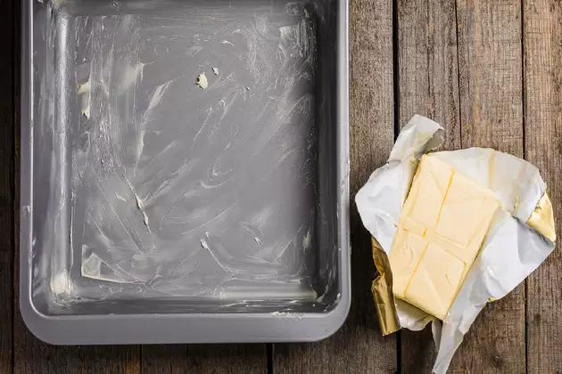
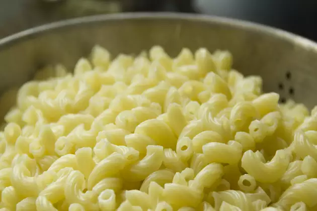
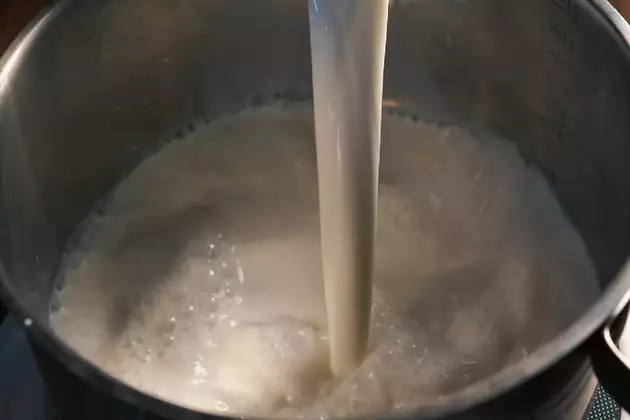
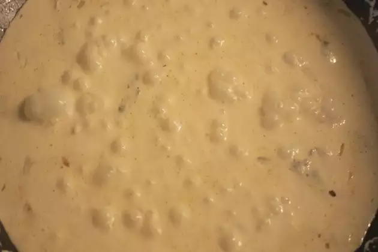
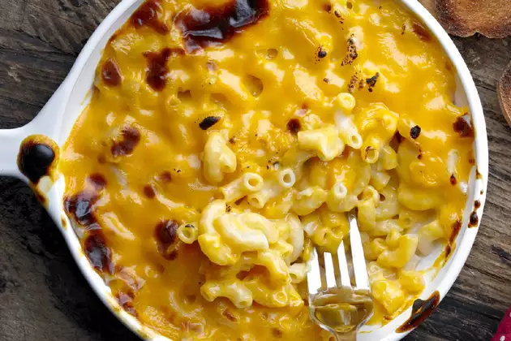

Mac and cheese, short for macaroni and cheese, is a popular comfort food dish. It typically consists of cooked elbow macaroni pasta and a creamy cheese sauce made from ingredients like cheese, milk, and butter. The pasta is often mixed with the cheese sauce and baked to create a creamy, cheesy, and satisfying dish. It can be served as a side dish or as a main course and is loved for its rich and comforting flavor.
To prepare this easy recipe, preheat the oven to 350 degrees Celsius and grease a baking tray with 1/2 tablespoon of butter. Keep it aside for a while.
Next, start cooking the macaroni in salted boiling water until it becomes soft. Drain all the water and keep the macaroni in the same dish in order to keep it warm.
Melt butter in a skillet, add flour and cook for 3-4 minutes. Slowly, add milk and cook over medium heat. Stir constantly till the consistency becomes thick.
Season it with salt and pepper. Add 1 cup of cheddar cheese along with about 40 grams of parmesan cheese and stir till they melt.
Now, mix the macaroni in this cheese sauce and transfer it to the baking tray. Sprinkle the remaining cheese over the macaroni and bake it for 30 minutes, until the cheese becomes golden brown. Your Macaroni Cheese is ready to be served.
